항공기사 (2006-08-06 기출문제)
1과목: 항공역학
1. 날개면적이 30m2이고, 날개의 스팬(Span)이 14m 일 때 가로 세로비는 얼마인가?
- 6.5
- 7.5
- 9.0
- 14.0
(정답률: 알수없음)

2. 어떤 항공기가 5,000m 고도를 576km/h 로 비행하고 있다 날개면적은 135m2 이고, 이 때의 항력계수는 0.027 이다. 필요마력(ps)은 얼마인가? (단, 공기의 밀도 = 0.075 kgㆍs2/m4)
- 47
- 93
- 7,456
- 14,930
(정답률: 알수없음)
3. 항공기가 착륙할 때 활주거리가 단축되는 것은?
- 바람이 앞에서 불 때
- 바람이 뒤에서 불 때
- 바람이 옆에서 불 때
- 바람이 위에서 불 때
(정답률: 알수없음)
4. 헬리콥터가 수평속도 V 상태에서 받음각 α와 코닝각(coning angle) β로 전진비행을 하고 있다. 진행방향과 90° 에 위치한 전진 깃(advancing blade)의 깃 끝의 상대 풍속(v)은 얼마 인가? (단, 주회전 날개의 각속도는Ω 이고 반지름은 R 이다.)
- v = V sinα + RΩcos β
- v = V cosα + RΩcos β
- v = V sinα + RΩsin β
- v = V cosα + RΩsin β
(정답률: 알수없음)
5. 헬리콥터의 주기 피치 조종장치를 설계할 때, 가장 먼저 고려하여야 할 것은?
- 주회전 날개의 강직성(rigidity)
- 주회전 날개의 유연성(flexibility)
- 주회전 날개의 평형성(equilibrium)
- 주회전 날개의 섭동성(precession)
(정답률: 알수없음)
6. 대기 온도가 20℃ 일 때 공기(r = 104) 중의 음속은?
- 340 m/sec
- 343 m/sec
- 345 m/sec
- 347 m/sec
(정답률: 알수없음)
7. NACA 23015 에어포일( airfoil )에서 최대 캠버( Camber )의 위치는?
- 시위의 30%
- 시위의 25%
- 시위의 20%
- 시위의 15%
(정답률: 알수없음)
8. 길이가 3m, 폭이 2m 인 평판이 속도가 20m/s 인 공기의 흐름 속에 놓여 있다. 이 때 레이놀즈 수가 RN = 106 에서 공기의 흐름이 층류에서 난류로 변한다면 천이점은 평판의 앞끝에서부터 얼마 떨어진 부분에서 발생하겠는가? (단, 동점성계수 υ= 0.15 cm2/sec)
- 0.55m
- 0.65m
- 0.75 m
- 0.85m
(정답률: 알수없음)
9. 항공기의 무게, 날개의 면적, 운항고도가 일정할 경우에 최대 양력 계수(CL MAX)가 4배인 날개를 사용하면 실속속도는 어떻게 변화하겠는가?
- 1/4로 감소
- 1/2로 감소
- 2배 증가
- 347 m/sec
(정답률: 알수없음)
10. 오존의 농도가 가장 높은 곳은?
- 대기권
- 성층권
- 중간권
- 시위의 15%
(정답률: 알수없음)
11. 반고정식 주 회전날개를 갖는 헬리콥터에서 시워방향의 동적평형( chordwise dynamic balance )을 맞추는 작업을 무엇이라 하는가?
- 트리밍(trimming)
- 얼라인먼트(alinment)
- 스위핑(sweeping)
- 트래킹(tracking)
(정답률: 알수없음)
12. 작동무게중심 범위( operating C.G range )에 대한 설명으로 가장 관계가 먼 내용은?
- 항공기에 적절한 명세거에 지시된 전방 한계( forward limit )와 후방 한계(agterward limit ) 사이의 거리이다.
- 작동 요구 사항에 맞는 최대전방 및 후방 중심위치로서 결정된다.
- 평균공력시위(MAC)의 백분율이나 항공기의 기준점에서 인치 거리로 나타낸다.
- 이륙 무게중심(C.G)의 한계 범위내에서 이동할 수 있는 허용 변화 부분을 말한다.
(정답률: 알수없음)
13. 날개 끝에서의 익단실속을 방지하는 방법으로 가장 올바른 것은?
- 기하학적 받음각을 줄이고, 캠버도 줄인다.
- 기하학적 받음각을 줄이고, 캠버도 키운다.
- 기하학적 받음각을 키우고, 캠버도 줄인다.
- 기하학적 받음각을 키우고, 캠버도 키운다.
(정답률: 알수없음)
14. 수직 충격파가 발생되면 나타나는 현상으로 가장 올바른 것은?
- 압력, 마하수, 엔트로피가 증가한다.
- 압력, 엔트로피가 증가하고 마하수는 감소한다.
- 압력은 증가하고 엔트로피와 마하수는 감소한다.
- 압력과 마하수는 증가하고 엔트로피 변화는 없다.
(정답률: 알수없음)
15. 활공기(glider)의 성능에 대한 설명으로 틀린 것은?
- 최소 활공비(glider ratio)는 최대 양항비와 같다.
- 최대 체공시간은 최소 침하속도(sinking speed)에서 얻어진다.
- 하강률(rate of descent)은 양항비에 비례한다.
- 활공각은 양항비에 반비례한다.
(정답률: 알수없음)
16. 수평비행에 있어서의 실속 속도가 90 km/h 인 비행기가 경사각 60˚ 의 정상선회를 할 때 실속 속도는 ?
- 127 km/m
- 140 km/h
- 142 km/h
- 150 km/h
(정답률: 알수없음)
17. 고양력 장치 중에서 경계층만을 제어해 줌으로써 고양력 계수를 얻는 장치는 ?
- plain flap
- dive flap
- fowler flap
- vortex generator
(정답률: 알수없음)
18. 수직 충격파가 발생되면 나타나는 현상으로 가장 올바른 것은?
- 타이어 마모
- 착륙 속도 증가
- 활공각 감소
- 실속 속도 증가
(정답률: 알수없음)
19. 무게중심 계산 시 올바른 것은?
- 기준선의 뒷방향은 양(+)으로 잡는다.
- 기준선에서 앞방향은 양(+)으로 잡는다.
- 화물을 내릴 경우레는 양(+)으로 한다.
- 짐을 실을 경우에는 음(-)으로 한다.
(정답률: 알수없음)
20. 조종면의 기능에 관계된 설명 중 가장 관계가 먼 내용은?
- Aileron의 공기역학적 평형의 방법은 Frise balance 이다.
- Aerodynamic balance는 힌지축의 모멘트를 감소시킨다.
- 조종면의 앞전을 길게 하여 조종력을 경감시키는 장치를 Leading edge balance 라고 한다.
- Trim tab은 공기역학적인 평형에 사용된다.
(정답률: 알수없음)
2과목: 항공기동력장치
21. 가스터빈 기관에서 이륙할 때에 추력을 증가시키는 방법으로 물을 분사시키는데 물이 분사되는 곳은?
- 압축기 입구와 출구의 디퓨저
- 후방 압축기
- 연료조정장치
- 터빈
(정답률: 알수없음)
22. 행정 체적이 1,890cc, 연소실 체적이 210cc 일 때 왕복기관의 압축비는 얼마인가?
- 7
- 8
- 9
- 10
(정답률: 알수없음)
23. 터보 제트기관에서 총 추력을 FG, 램 항력을 DM, 진추력을 FN, 이라 할 때 FN 을 구하는 수식은?
- FN = FG + DM
- FN = 1/2g(DM - FG)
- FN = FG - DM
- FN = 1/g(FG - DM)
(정답률: 알수없음)
24. 기화기 노즐에서 연료가 노즐로부터 흡출될 때 기화하기 쉽게 하기 위하여 연료노즐 도중에서 공기를 혼입시키는 일을 하는 것은?
- 공기밸브
- 공기블리이드
- 드로틀 밸브
- 쵸크 밸브
(정답률: 알수없음)
25. 밸브 간극이란 무엇을 말하는가?
- 밸브스템 끝과 로커 암사이의 간극
- 캠과 로커 암사이의 간극
- 푸시로드와 캠사이의 간극
- 밸브스템과 밸브시이트사이의 간극
(정답률: 알수없음)
26. 축류형 터빈에 대한 설명으로 가장 관계가 먼 내용은?
- 1렬의 스테이터와 1렬의 로터를 합하여 1단이라 한다.
- 단의 구성은 스테이터가 앞에 있고 로터가 뒤에 있다.
- 제작이 간편하여 소형기관에 주로 사용된다.
- 스테이터를 노즐이라고도 한다.
(정답률: 알수없음)
27. 왕복기관의 피스톤 링에 관한 설명 중 가장 거리가 먼 내용은?
- 피스톤 링이 손상되면 노킹현상이 발생한다.
- 압력손실을 방지한다.
- 실린더 벽의 윤활유 두께를 조절한다.
- 피스톤의 열을 실린더 벽으로 전달한다.
(정답률: 알수없음)
28. 그림과 같은 오토사이클의 P-V 선도에서 압축비를 가장 올바르게 표시하고 있는 수식은?
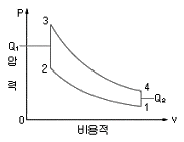
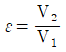
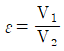
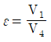
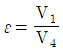
(정답률: 알수없음)
29. 다음 중 가스터빈 엔진의 연료계통 구성품이 아닌 것은?
- Fuel-Oil Cooler
- Pressurizing & Drain Valve
- FCU(Fuel Control Unit)
- Jet Fuel Starter
(정답률: 알수없음)
30. 열효율과 연료소비율의 관계를 가장 올바르게 설명한 것은? ( 단, 발열량은 일정하다.)
- 열효율은 연료소비율의 제곱에 비례한다.
- 열효율은 연료소비율의 제곱에 반비례한다.
- 열효율과 연료소비율은 반비례한다.
- 열효율은 연료소비율에 비례한다.
(정답률: 알수없음)
31. 항공기 왕복 기관의 윤활유 펌프로 사용되는 형식은?
- 기어형
- 용량형
- 원심형
- 전기형
(정답률: 알수없음)
32. 내부에너지 U, 압력 P, 부피 V 라 할 때 엥탈피 H 를 가장 올바르게 표현한 것은?
- H = U + PV
- H = V - U/P
- H = PU + V
- H = U + PV
(정답률: 알수없음)
33. 대형 가스터빈 기관에서 주로 쓰이고 있는 에뉼러형(ANNULAR TYPE) 연소실에 대한 설명으로 가장 올바른 것은?
- 구조가 복잡하나 연소가 안정되어 출구 온도분포가 일정하다.
- 정비가 용이하다.
- 캔형(CAN TYPE) 연소실과 비교하여 열효율이 저조하다.
- 구조가 간단하고 연소가 안정되어 출구온도 분포가 일정하다.
(정답률: 알수없음)
34. 어떤 기관의 피스톤 지름이 140mm, 행정거리가 150mm, 실린더 수가 4, 제동평균유효압력이 7.5kgf/cm2, 회전수가 2,500rpm 일 때 제동마력(ps)은 약 얼마인가?
- 89
- 192
- 385
- 946
(정답률: 알수없음)
35. 가스터빈 기관에서 트리밍(trimming)을 하는 주 목적은?
- 기관의 정해진 회전수에서 정격추력을 내도록 연료 조정장치를 조정한다.
- 기관의 최대추력을 확인하다.
- 압축비를 증가시킨다.
- 배기압력을 조정한다.
(정답률: 알수없음)
36. 현대식 가스터빈 엔진에서 사용되는 오일에 요구되는 특성으로 가장 거리가 먼 것은?
- 점도지수가 어느 정도 높을 것
- 인화점이 낮을 것
- 기화성이 낮을 것
- 점성과 유동점이 낮을 것
(정답률: 알수없음)
37. 프로펠러 추력 T 를 가장 올바르게 표현한 식은? (단, 프로펠러 지름 : D, 회전수 : n, 공기밀도 : ρ, 추력계수: G)
- T =GρnD2
- T =Gρn2D4
- T =Gρn2D2
- T =Gρn2D6
(정답률: 알수없음)
38. 기하학적 피치(Geometrical Pitch)는 P = 2πr tanβ 이다. 여기서 tanβ는 무엇을 나타내는가?
- 프로펠러의 받음각(Angle of attack)
- 프로펠러의 유효피치각 (Effective pitch angle)
- 프로펠러의 전진각 (angle of advance)
- 프로펠러의 브레이드 각(Blade angle)
(정답률: 알수없음)
39. 열역학 제2법칙에 대한 설명 중 가장 거리가 먼 내용은?
- 에너지 변환의 방향성을 설명하는 법칙이다.
- 자연계에서 대부분의 상태변화는 가역과정으로 일어난다.
- 열원으로부터 받은 열량을 전부 일로 변화시킬 수 있는 열기관을 제작할 수는 없다.
- 열은 저온부로부터 고온부로 자연적으로 전달되지는 않는다.
(정답률: 알수없음)
40. 왕복기관의 크랭크 핀(crank pin)에는 보통 구멍이 뚫려 있는데, 그 이유로 틀린 것은?
- 크랭크 축의 총중량을 감소시킨다.
- 윤활유의 통로 역할을 한다.
- 슬러지 챔버(sludge chamber) 역할을 한다.
- 마찰을 적게 하기 위한 역할을 한다.
(정답률: 알수없음)
3과목: 항공기구조
41. 하나의 부재가 파손되더라도 그 부재가 부담하고 있었던 하중을 많은 수의 부재가 분담해서 담당하도록 설계된 폐일세이프 구조는?
- double structure
- redundant structure
- back-up structure
- load dropping structure
(정답률: 알수없음)
42. 기둥의 임계하중 Pcr 에 대한 설명으로 가장 관계가 먼 내용은?
- 기둥의 길이의 제곱에 반비례한다.
- 기둥의 세장비(slenderness ratio)에 비례한다.
- 재료의 탄성계수에 비례한다.
- 기둥의 양단 지지 조건에 관계된다.
(정답률: 알수없음)
43. 판재의 판금성형 작업에서 굽힘 허용값과 가장 관계가 먼 것은?
- 굽힘 각도
- Bender 반지름
- 스프링 백
- 판재의 두께
(정답률: 알수없음)
44. 경사각(BANK ANGLE) 30˚ 로서 정상 수평 선회하고 있는 비행기의 날개에 걸리는 하중 배수는 얼마인가?
- 89
- 192
- 385
- 946
(정답률: 알수없음)
45. 그림과 같이 구조물에 하중(P)이 작용하고 있다. A B 부분의 자유물체도 (free body diagram)는?
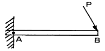
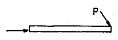
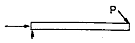
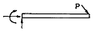
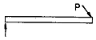
(정답률: 알수없음)
46. 항공기 구조설계시 구조물의 피로파괴방지를 위해서 유의해야 할 점으로 틀린 것은?
- 균열의 전파방지를 위해 이중구조를 사용한다.
- 구조의 각부분에 작용하는 응력은 재료의 피로한계보다 낮게한다.
- 형태는 가능한 한 대칭으로 한다.
- 하중이 직선으로 전단되지 않도록 불연속부를 많이 둔다.
(정답률: 알수없음)
47. 허니컴 샌드위치 구조의 특징으로 가장 관계가 먼 내용은?
- 집중하중에 강하다.
- 단열성이 좋다.
- 표면이 평평하다.
- 충격을 흡수하다.
(정답률: 알수없음)
48. 다음 중 고양력 장치가 아닌 것은?
- 슬랫(slat)
- 드룹노즈(droop nose)
- 크루거 플랩(kruger flap)
- 발란스 탭(balance tab)
(정답률: 알수없음)
49. 다음 중 횡 방향 진동의 고유주파수가 가장 큰 구조물은? (단, 보의 길이는 L, 단면적은 A, 굽힘 강성은 El 로 동일하다.)
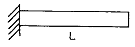
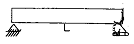
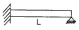
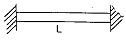
(정답률: 알수없음)
50. 세미모노코크(Semi-monocoque) 기체의 동체구조 부재가 아닌 것은?
- rib
- stringer
- skin
- bulkhead
(정답률: 알수없음)
51. 다음과 같이 일정한 장력 T 가 작용하는 줄의 수직 방향의 고유진동수를 올바르게 표시한 것은?
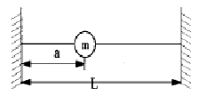
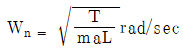
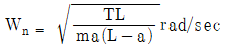
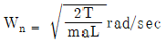
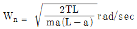
(정답률: 알수없음)
52. 고 전단 리벳에 대한 설명으로 가장 올바른 것은?
- 리벳의 중앙에 핀을 삽입시켜 고정한다.
- 화재의 위험이 있는 곳에 사용할 수 없다.
- 리벳의 몸통이 비어 있는 것이 특징이다.
- 나사가 없는 볼트라고도 하며 높은 전단강도가 요구되는 곳에 사용된다.
(정답률: 알수없음)
53. 주익에 경계층격판(境界層隔板)을 붙이는 가장 큰 이유는 무엇인가?
- 보조익의 효과를 높이기 위하여
- 큰 받음각이 미익으로서 와류의 영향을 주기 위하여
- 주익의 Torque 를 막기 위하여
- 경계층이 익면을 따라 익단까지 흐르는 흐름을 막기 위하여
(정답률: 알수없음)
54. 균일 단면 보의 양 끝에 동일한 굽힘 모멘트를 가한 경우 보에 저장되는 굽힘변형 에너지에 대한 설명으로 가장 올바른 것은?
- 보의 굽힘 강성이 큰 경우가 저장되는 에너지가 크다
- 보의 굽힘 강성이 작은 경우가 저장되는 에너지가 크다
- 보의 굽힘 강성에 관계없이 저장되는 에너지는 일정하다.
- 보의 전단 강성이 크면 저장되는 에너지는 크다.
(정답률: 알수없음)
55. 다음 설명 중 틀린 것은?
- 항공기 각 부위에 발생하는 응력은 limit load 가 작용할 때도 항복응력(yield stress) 이하 이어야만 된다.
- ultimate load는 limit load의 1.5배이다
- design load는 ultimate load에 안전계수를 곱한 것이다.
- limit load는 정상운항시 비행기에 주어질 수 있는 최대하중이다.
(정답률: 알수없음)
56. 그림은 지주(支柱)를 갖는 경비행기의 날개로서 A, B, C점은 마찰없는 힌지로 되어 있다. 그림과 같이 공기력이 분포할 때 다음의 어느 부분이 beam-column인가?
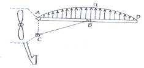
- AB부분
- BD부분
- BC부분
- AD부분
(정답률: 알수없음)
57. 그림과 같은 트러스(truss) 구조물에서 C, D, E점에 각각 2,000lb, 4,000lb, 1,000lb의 외력이 작용할 때 B점에서의 반력의 크기는 얼마인가?
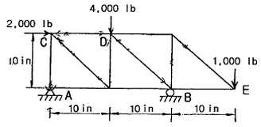
- 5,000lb
- 4,500lb
- 4,000lb
- 3,500lb
(정답률: 알수없음)
58. 그림과 같은 단면에서 전단축의 위치 e 를 구하면? (단, 굽힘하중은 flange가 전담한다고 가정한다.)
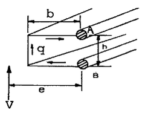
- e = h + b
- e = 1.5 b
- e = 2b
- e = b
(정답률: 알수없음)
59. 항공기 날개의 전단 좌굴이 국부적으로 일어나도 구조 설계 관점에서 허용되는 가장 큰 이유는?
- 전단 좌굴이 일어날 확률이 낮으므로
- 전단 좌굴은 하중이 제거되면 구조물이 손상없이 원래 형상을 회복하므로
- 전단 좌굴보다 전단에 의한 소성변형이 더 심각하므로
- 전단 좌굴보다 균열에 의한 파괴가 더 잘 일어나므로
(정답률: 알수없음)
60. 그림과 같은 계가 자유진동을 할 때 주기를 나타내는 수식은?
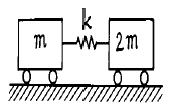
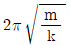
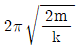
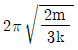
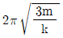
(정답률: 알수없음)
4과목: 항공장비
61. 조종석의 스위치를 램(Ram) 공기위치에 놓으면 솔레노이드 밸브가 열려서 객실공기를 대기로 방출시키는 것은?
- 덤프밸브
- 부압 릴리프 밸브
- 아우트 플로우 밸브
- 체크밸브
(정답률: 알수없음)
62. 다음 전기측정 계기 중에서 자체에 전원을 갖고 있는 것은?
- 전압계
- 전류계
- 회로시험기
- 전력계
(정답률: 알수없음)
63. 항공기에 사용되는 냉방장치 중의 하나인 프에온 증기사이클(freon vapor cycle) 냉각방식계통에서 콘덴서(condenser)로 들어가는 프레온의 상태는?
- 고압 액체
- 저압 액체
- 고압 기체
- 저압 기체
(정답률: 알수없음)
64. 자동 조종 장치(autopilot system)에서 기수 방위를 일정하게 유지시켜 비행하는 모드는?
- Navigation Mode
- Altitude Hold Mode
- Heading Mode
- Roll Attitude Mode
(정답률: 알수없음)
65. 다음 중 유압계통의 고장으로 작동유의 공급이 불가능 할 때 계통에 공기압이 공급되도록 하여 주는 밸브는?
- 바이패스 (Bypass) 밸브
- 셔틀 (Shuttle) 밸브
- 파이롯 (Pilot) 밸브
- 시퀀스 (Sequence) 밸브
(정답률: 알수없음)
66. 통신계통에서 반송파(carrier wave)를 가장 올바르게 설명한 것은?
- “A"란 지점에서 ”B" 란 지점으로 이동한 전파
- 전리층 영향으로 사라져 버린 전파
- 지구 자계의 영향으로 불규칙하게 이동하는 신호파
- 높은 주파수에 정보를 포한하여 신호로 변화시킨 것
(정답률: 알수없음)
67. 제트비행기의 연료탱크에 사용되는 전기 용량식 액량계에서 축전기의 전기적 용량은? (단, K : 유전율, S : 1개 극판의 넓이 N : 극판의 수, d : 극판사이의 거리)
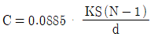
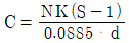
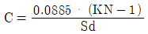
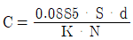
(정답률: 알수없음)
68. 항공기에서 교류의 주파수를 일정하게 유지하는데 사용되는 것은?
- 정속구동장치(Constant Speed Drive)
- 인버터(Inverter)
- 다이나모터(Dynamotor)
- 스피드 거버너(Speed Governor)
(정답률: 알수없음)
69. 원격지시 계기 중 오토신(AUTOSYN)에 대한 설명으로 가장 올바른 것은?
- 교류로 작동하는 원격지시계의 한 종류로 26V, 400Hz의 단상 교류 전원이 회전자에 연결된다.
- 회전자로 강력한 영구자셕을 사용한다.
- 120도 간격으로 분할하여 감겨진 정밀 저항 코일로 되어 있어 지시 값의 오차가 적은 장점을 갖는다.
- 작고 가볍기는 하지만, 토크가 약하고 정밀도가 다소 떨어지는 결점이 있다.
(정답률: 알수없음)
70. 압축기를 이용한 공기압 계통에서 필수적으로 갖추어야 할 부품들로 가장 관계가 먼 것은?
- 그라운드 차징 밸브(Ground charging valve)
- 루브리케이터(Lubricator)
- 화학 건조기(Chemical drier)
- 수분 분리기(moisture seperator)
(정답률: 알수없음)
71. LANDING 과 TAXING 시 도움을 주는 항법계통과 가장 관계가 먼 것은?
- VOR
- ILS(INSTRUMENT LANDING SYSTEM)
- MARKER BEACON
- ADF
(정답률: 알수없음)
72. 다음 방위에 대한 설명 중 가장 올바른 것은?
- 진방위란 지자기 축을 적도에서 기준으로 하여 시계방향으로 잰 각을 말한다.
- 자방위란 지자기 축의 북인 자북을 기중으로 하여 시계 방향으로 잰 각이다.
- 나방위란 나침반의 남쪽을 기준으로 하여 시계 반대방향으로 잰 각을 말한다.
- 진북방위란 자방위에 자차 및 편각을 합한 값으로 즉, 진북방위 = 자방위 + 자차 + 편각 이다.
(정답률: 알수없음)
73. 자이로의 드리프트(drift)의 종류가 아닌 것은?
- 불규칙 드리프트
- 지구의 자전에 의한 드리프트
- 세차에 의한 드리프트
- 이동에 의한 드리프트
(정답률: 알수없음)
74. 그림의 전기저항 접속에서 점 a, b 간의 합성저항 값을 구하면 몇 Ω 인가?
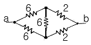
- 2.5
- 3
- 4
- 6
(정답률: 알수없음)
75. 절대압력을 측정하기 위하여 사용되는 수감부는?
- 아네로이드(aneroid)
- 다이아프램(diaphragm)
- 벨로우(bellow)
- 부르돈 관(burdon tube)
(정답률: 알수없음)
76. 단면적이 1 in2 와 5 in2 인 스톤을 가진 작동 실린더에서 유체를 매개체로 하여 서로 연결하고 단면적이 작은 피스톤에 1,000 psi 의 압력을 하였다면, 단면적이 큰 피스톤이 받는 압력은 얼마인가?
- 200 psi
- 500 psi
- 1,000 psi
- 5,000 psi
(정답률: 알수없음)
77. 자이로의 드리프트(drift)의 종류가 아닌 것은?
- 잔류자기 효과를 증대 하기 위하여
- 전압상승 효과를 크게 하기 위하여
- 전력상승 효과를 주기 위하여
- 맴돌이전류를 감소시키기 위하여
(정답률: 알수없음)
78. 지자기 자력선의 방향과 수평선간의 각을 말하며, 적도 부근에서는 거의 0도 이고 양극으로 갈수록 90도에 가까워지는 것은?
- 편각
- 복각
- 수평분력
- 수직분력
(정답률: 알수없음)
79. 항공기에 사용되는 니켈-카드뮴 밧데리에 대한 설명 중 가장 올바른 것은?
- 전압은 90% 방전 할 때까지도 거의 일정하게 유지되는 특성이 있다.
- 니켈-카드뮴 밧데리의 중화제로는 탄산나트륨 용액을 사용한다.
- 충전상태는 전해액의 비중으로 나타낼 수 있어서 비중계로 측정한다.
- 밧데리가 방전하고 있을 때에는 전해액의 수면이 높아지고 충전하면 낮아진다.
(정답률: 알수없음)
80. 항상 기압셋트를 29.92 inHg로 하고, 모든 항공기가 표준대기압과 고도관계에 기초하여 고도를 정하는 방식은?
- QNH 셋팅
- QFE 셋팅
- Zero 셋팅
- QNE 셋팅
(정답률: 알수없음)
5과목: 항공제어공학
81. 특성방정식이 다음과 같다. K의 변화에 따른 근궤적을 그릴 때 K = 0 이 되는 점은?
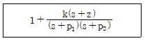
- s = - z
- s = - p1, 그리고 s = - p2
- s = - z, 그리고 s = - p1, s = - p2
- s = - (p1 + p2)
(정답률: 알수없음)
82. 전달함수
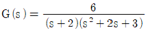
인 계통에 입력 10cos3t 가 인가될 때 정상상태에서의 출력은?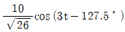
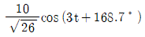
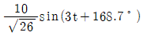
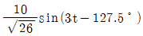
(정답률: 알수없음)
83. 다음 미분방정식과 초기 값을 만족시키는 함수 y(t)의 라플라스 변환을 구하면?
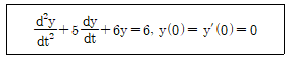
- 1/s2+5s-6
- 2/s2+5s-6
- 4/s(s2+5+6)
- 6/s2+5s+6
(정답률: 알수없음)
84. 자이로의 드리프트(drift)의 종류가 아닌 것은?
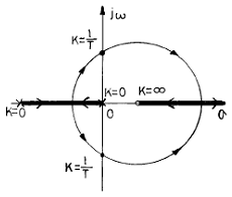
- 이득이 1/T 보다 커야 안정하다.
- 최소 위상계(minimum phase system)가 아니다.
- 한 개의 미분요소를 포함하고 있다.
- 원의 반지름은 1 이다.
(정답률: 알수없음)
85. 근궤적에서 이탈점(breakaway point)이란?
- 더 이상 이득을 계산할 수 없는 점
- 근궤적이 허수축과 만나는 점
- 이득의 증가에 따라 특성근이 실수에서 허수로 변하는 점
- 영점의 근궤적과 극점의 근궤적이 서로 만나는 점
(정답률: 알수없음)
86. 항공기의 자동조종장치로부터 요구되는 편각 명령(Defledtion angle command)을 따라 방향타( Rudder )를 구동시킬 때 이용되는 제어방식은?
- 시퀀스 제어
- 프로세서 제어
- 추종 제어(서보기구)
- 프로그램 제어
(정답률: 알수없음)
87. 항공기의 수직꼬리날개에 러더를 설치하여 조종하게 만드는 이유로 가장 거리가 먼 내용은?
- 스핀(spin) 회복
- 이∙착륙시의 측풍상쇄
- 비대칭 추력의 상쇄
- 방향 안정성 확보
(정답률: 알수없음)
88. 다음 중에서 감쇄비(damping ratio) ζ가 1보다 작고 0보다 큰 제어계는 어떤 제동을 나타내는가?
- under damping
- un-damping
- critical damping
- over damping
(정답률: 알수없음)
89.
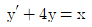
의 응담함수에서 시정수 (Time Constant)는 얼마인가?- 0.25
- 0.5
- 2
- 4
(정답률: 알수없음)
90. 다음 중 항공기으 l가로 동안정성과 가장 관계가 먼 것은?
- 더치롤 운동
- 나선 운동
- 롤 운동
- 장주기 운동
(정답률: 알수없음)
91. 기계적 시스템에서 힘과 속도를 전기적 시스템의 전류와 전압에 각각 상사시킬 때 스프링 상수는 무엇에 상사 되는가?
- 커패시턴스
- 저항의 역수
- 인덕턴스의 역수
- 전하
(정답률: 알수없음)
92. 위상 뒤짐 보상기는 근사적으로 어떤 제어기 특성을 갖는가?
- 비례 제어기
- 미분 제어기
- 적분 제어기
- 비례 미분 제어기
(정답률: 알수없음)
93. 집중 파라미터 시스템 중에서 선형 시불변 시스템의 표현방식으로 틀린 것은?
- 편미분 방정식으로만 표현할 수 있다.
- 차분 방정식으로 표현할 수 있다.
- 전달함수로 표현할 수 있다.
- 불확실성을 고려하여 표현할 수 있다.
(정답률: 알수없음)
94. 항공기의 운동방정식이 다음 식으로 결정되었다. 이 식으로부터 단주기운동의 고유진동수를 구하면 얼마인가?
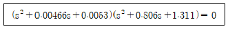
- ωns=3rad/sec
- ωns=2.11rad/sec
- ωns=1.145rad/sec
- ωns=0.352rad/sec
(정답률: 알수없음)
95.
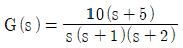
에서 ω = 100 [rad/sec]일 때 이득은 약 몇 db인가?- -60
- -120
- 60
- 120
(정답률: 알수없음)
96. 최소 위상계(minimum phase system)의 설명으로 가장 올바른 것은?
- 출력은 언제나 입력보다 늦게 나타난다.
- 입∙출력의 위상차가 ±180˚ 로 제한된다.
- 실수부의 양의 값인 극점이나 영점을 가지지 않는다.
- 입력주파수가 변해도 위상이 변하지 않는다.
(정답률: 알수없음)
97. 다음의 특성방정식에서 허수 축이나 오른쪽 평면에 놓이는 근의 수는?
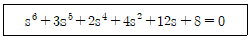
- 0
- 1
- 2
- 4
(정답률: 알수없음)
98. 전기시스템을 이루는 선로상수가 아닌 것은?
- 저항
- 인덕턴스
- 커패시턴스
- 포텐셔미터
(정답률: 알수없음)
99. 보드선도를 이용해서 보상기를 설계하고자 한다. 다음 보상기들의 주파수 특성에 대한 설명 중 가장 거리가 먼 내용은?
- 위상 앞섬 보상기는 고주파 통과 필터이다.
- 위상 앞섬 보상기는 시스템의 감쇄 특성을 개선한다.
- 위상 뒤짐 보상기는 저주파 통과 필터이다.
- 위상 뒤짐 보상기는 저주파 통과 필터이다.
(정답률: 알수없음)
100. 특성방정식
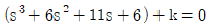
인 제어계의 근궤적(root locus) 점근선(asymptote)의 점근각은 얼마인가?- 60˚와 180˚
- -60˚와 180˚
- ±60˚와 180˚
- ±60˚와 0˚
(정답률: 알수없음)